Computación Estadística con R
Visualzación de Datos
Joshua Kunst
Estructura
- ¿Por que?
- Definiciones
- Recomendaciones Técnicas & Visuales
- Ejercicios y concursos
¿Por que visualización?


Definición técnica (Posible)
Representación gráfica de datos codificando la información como: posición, tamaño, formas, colores

Muchos sabores:

Cosas importantes sobre visualización de datos:
- Lleva información, es un mensaje
- Ejercicio mental para interpretar o decodificar(!!) información
- No siempre es el fin
- Herramienta exploratoria
- Distintas visualizaciones en mismos datos / Distintas historias
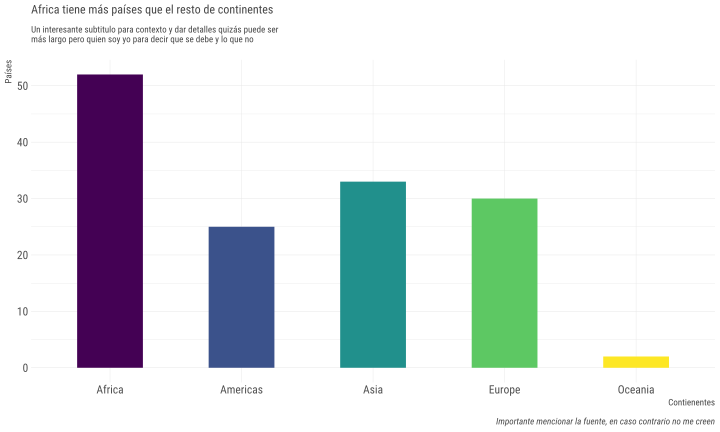
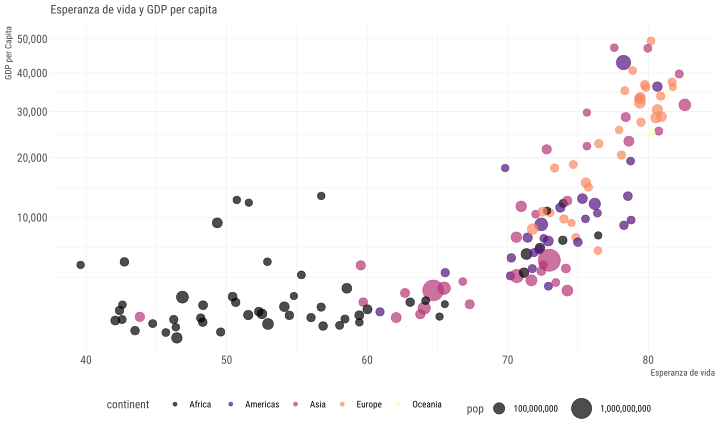
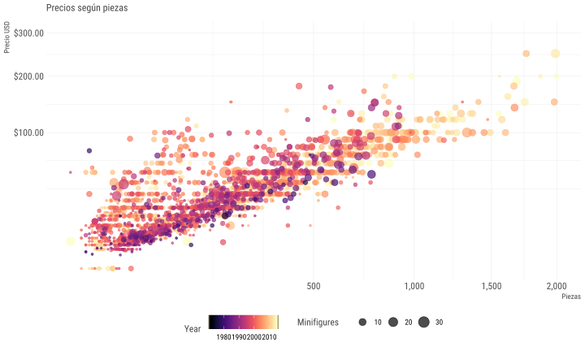

Ejercicio
¿Existe el mejor gráfico? ¿Cuál de las siguientes formas funciona mejor con el títutlo?
La región del sur exhibe el mayor crecimiento
Adapatado del tweet de Lisa Charlotte Rost que a su vez está viene del ejemplo del libro “Show me the numbers” de Stephen Few
Los datos:
| region | Q1 | Q2 | Q3 | Q4 |
|---|---|---|---|---|
| sur | 100 | 150 | 225 | 290 |
| norte | 150 | 160 | 180 | 300 |
| este | 180 | 200 | 200 | 240 |
| oeste | 250 | 250 | 300 | 170 |
Opción #1
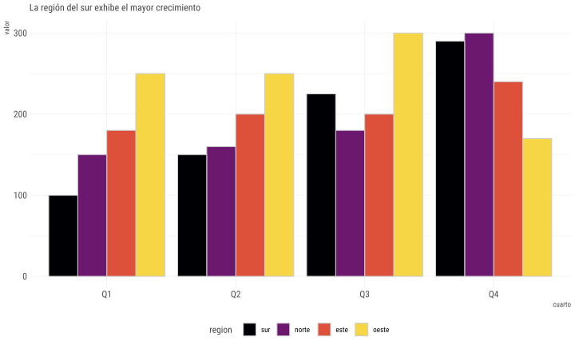
Opción #2
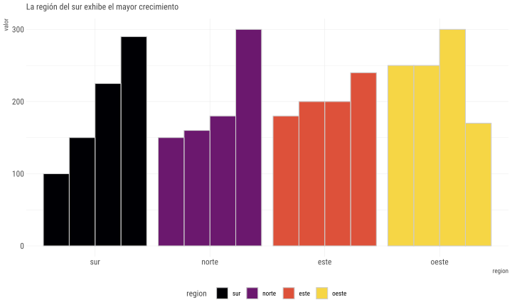
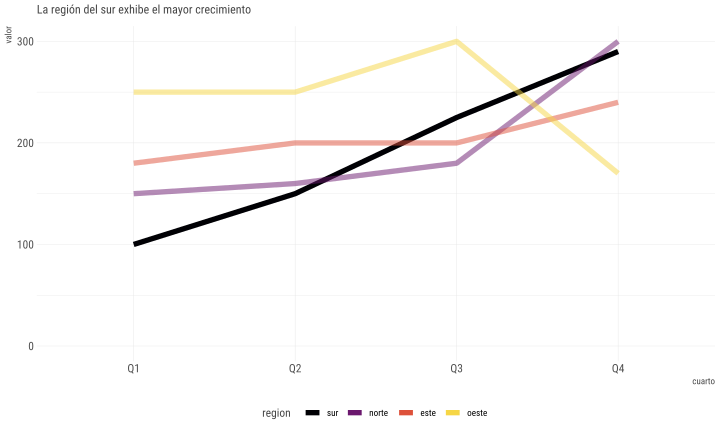
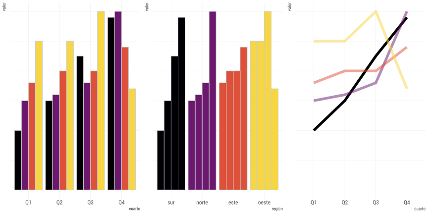
(Posible) Respuesta
No. Dependerá de tu mensaje, de tu historia.
Recomendaciones Técnicas
y algunas Misceláneas
Pie Charts (o tortas)

Usuales dificultades
- Compara áreas
- Ejercicio mental de rotar para comparar categorías
Es muy usado es el pie chart

Es muy (ab)usado es el pie chart
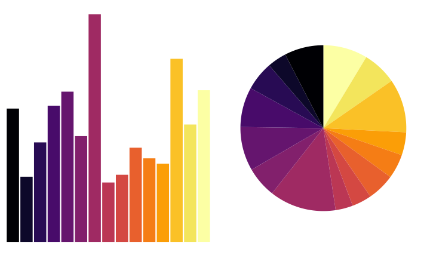

Puntos de Referencia


Convenciones
Ejercicio 2. Encuentre las anomalías

Rápidamente ¿Dónde se produce el máximo?

Tipografía
¿Conocen a …?
Arial
Times New Roman
Comic Sans

Según comic sans criminal:
- Fuentes tienen personalidad
- Tiene un propósito
- Armonía en el universo
Colores
La misma idea de las convenciones!
1 2 3 4 5 6
- Dar foco y llamar la atención
- Debiesen ser corcondantes con el dato
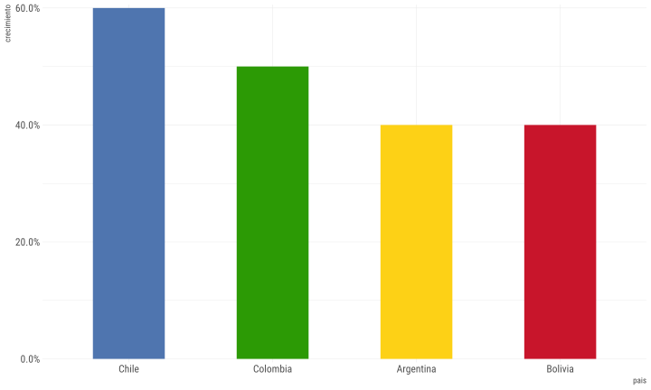
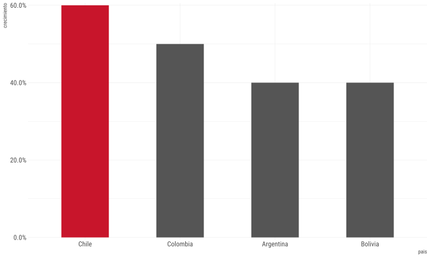
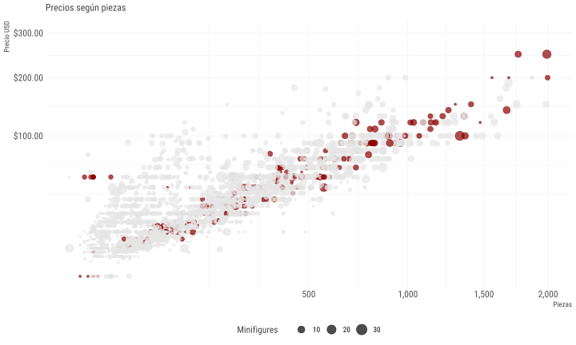
Etiquetas
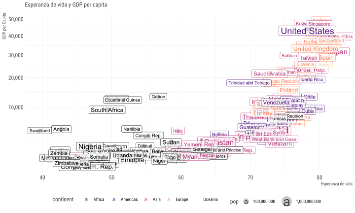

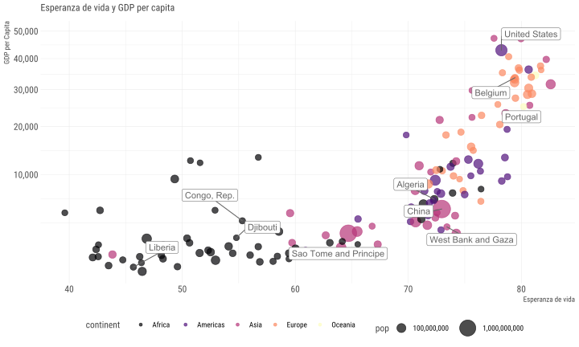
Visualizando con ggplot2
ggplot2
Características:
- Paquete para visualizar datos mediante capas
- Es muy poderoso y flexible
- Se carga junto al
tidyverse - No es la única opción en R para graficar
Datos
## # A tibble: 142 x 6
## country continent year lifeExp pop gdpPercap
## <fct> <fct> <int> <dbl> <int> <dbl>
## 1 Afghanistan Asia 2007 43.8 31889923 975.
## 2 Albania Europe 2007 76.4 3600523 5937.
## 3 Algeria Africa 2007 72.3 33333216 6223.
## 4 Angola Africa 2007 42.7 12420476 4797.
## 5 Argentina Americas 2007 75.3 40301927 12779.
## 6 Australia Oceania 2007 81.2 20434176 34435.
## 7 Austria Europe 2007 79.8 8199783 36126.
## 8 Bahrain Asia 2007 75.6 708573 29796.
## 9 Bangladesh Asia 2007 64.1 150448339 1391.
## 10 Belgium Europe 2007 79.4 10392226 33693.
## # ... with 132 more rowsCreando un gráfico :)
Mejorando un gráfico
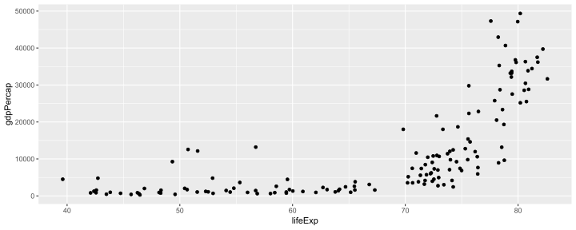
Que sucedió?
ggplot()crea un sistema de coordenadas al cual se pueden agregar capasggplot(data = paises)da un grafico vacío pues no agregamos capasgeom_point()agrega una capa de puntos al gráfico usando las filas depaises- Cada función
geom_algotiene un argumento de mapping que define cómo se asignan o se “mapean” las variables del conjunto de datos a propiedades visuales delgeom_algo - El argumento de mapping siempre aparece emparejado con
aes(), y los argumentosxeyespecifican qué variables asignar a los ejesxey
Podemos setear las propiedades estéticas de tu geom manualmente:
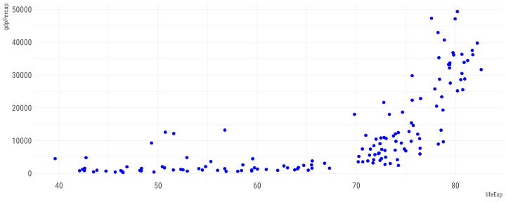
En este caso un punto no solo puede poseer x e y, puede tener tamaño dado por una variable
ggplot(data = paises) +
geom_point(mapping = aes(x = lifeExp, y = gdpPercap, size = pop), color = "blue")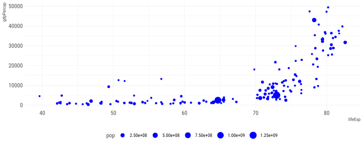
Quizás en lugar de setar color fijo, podemos asignarlo segun una variable
ggplot(data = paises) +
geom_point(mapping = aes(x = lifeExp, y = gdpPercap, size = pop, color = continent))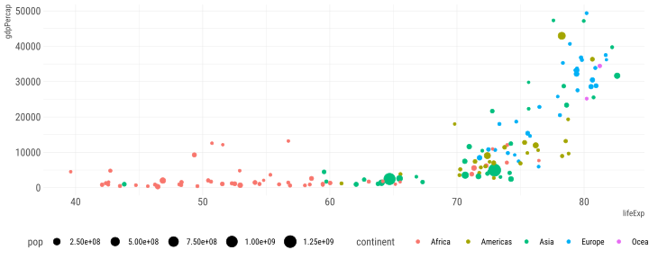
O realizar facets/paneles
ggplot(data = paises) +
geom_point(mapping = aes(x = lifeExp, y = gdpPercap, size = pop)) +
facet_wrap(vars(continent))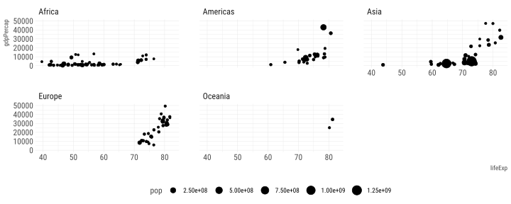
Ejercicios
Revisemos el archivo 04-script-visualizacion-datos.R